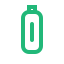
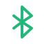

Someone Approaches
If a colleague, roommate, or visitor enters unexpectedly, protect sensitive windows quickly.
Local file vaults, USB device removal, Bluetooth disconnect, away detection, gesture triggers, and one-click actions help protect your files and windows when you step away.

Use Cases
From an unexpected visitor to an urgent departure, SuperWatchDog helps protect what is on screen and in your local private files.
If a colleague, roommate, or visitor enters unexpectedly, protect sensitive windows quickly.
If a call, meeting, or urgent task pulls you away, there is no need to close every file first.
When a PC is lent, shared, or sent for repair, private documents can remain locked.
Handle frequent short periods away in offices, dorms, and shared work areas.
Features
Three core capabilities cover private storage, device triggers, and visual sensing, with six focused features for different away-protection needs.
Keep important private files locked locally.
React when a linked USB or Bluetooth device disconnects.
Start protection after you leave or with a supported gesture.
Six focused features
Keep contracts, photos, and personal documents in a local file vault, so important files can stay locked when a device is shared, lent, or sent for repair.

When you must leave your desk immediately, unplug a linked USB device to start preset protection without closing every file and window first.

If you hurry away from an office or dorm with your phone, protection can start after Bluetooth disconnects instead of leaving the PC unprotected.
If someone approaches unexpectedly, enters the room, or sensitive content appears on screen, start protection in one click without arranging every window.
If an urgent situation pulls you away before you lock the PC, away detection can start protection and reduce exposure while the computer is unattended.
If someone approaches suddenly or reaching the keyboard is inconvenient, use a supported gesture to start protection and secure private content quickly.
Security Boundaries
SuperWatchDog should be used on devices and files you are authorized to manage. It is not an anti-forensics tool, bypass tool, or offensive security product.